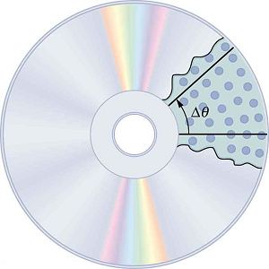
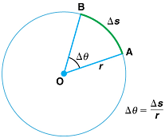
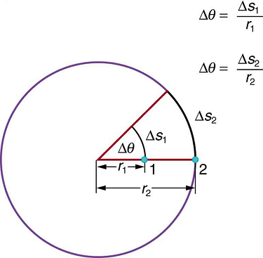
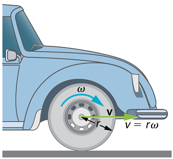

- Define arc length, rotation angle, radius of curvature and angular velocity.
- Calculate the angular velocity of a car wheel spin.
InKinematics, we studied motion along a straight line and introduced such concepts as displacement, velocity, and acceleration.Two-Dimensional Kinematicsdealt with motion in two dimensions. Projectile motion is a special case of two-dimensional kinematics in which the object is projected into the air, while being subject to the gravitational force, and lands a distance away. In this chapter, we consider situations where the object does not land but moves in a curve. We begin the study of uniform circular motion by defining two angular quantities needed to describe rotational motion.
When objects rotate about some axis—for example, when the CD (compact disc) in Figure rotates about its center—each point in the object follows a circular arc. Consider a line from the center of the CD to its edge. Eachpitused to record sound along this line moves through the same angle in the same amount of time. The rotation angle is the amount of rotation and is analogous to linear distance. We define therotation angle \(\Delta \theta\)to be the ratio of the arc length to the radius of curvature:


Thearc length \(\Delta s\)is the distance traveled along a circular path as shown in Figure. Note that is theradius of curvatureof the circular path.We know that for one complete revolution, the arc length is the circumference of a circle of radius \(r\). The circumference of a circle is \(2 \pi r\).
Thus for one complete revolution the rotation angle is \[\Delta \theta = \dfrac{2\pi r}{r} = 2\pi. \]
This result is the basis for defining the units used to measure rotation angles, \(\Delta \theta \) to beradians(rad), defined so that
A comparison of some useful angles expressed in both degrees and radians is shown in Table .
| Degree Measure | Radian Measure |
|---|---|
| \(30^o\) | \(\dfrac{\pi}{6}\) |
| \(60^o\) | \(\dfrac{\pi}{3}\) |
| \(90^o\) | \(\dfrac{\pi}{2}\) |
| \(120^o\) | \(\dfrac{2\pi}{3}\) |
| \(135^o\) | \(\dfrac{3\pi}{4}\) |
| \(180^o\) | \(\pi\) |

If \(\Delta \theta = 2 \pi \, rad \), then the CD has made one complete revolution, and every point on the CD is back at its original position. Because there are \(360^o\) in a circle or one revolution, the relationship between radians and degrees is thus
How fast is an object rotating? We defineangular velocity \(\omega\)as the rate of change of an angle. In symbols, this is
where an angular rotation \(\Delta \theta \) takes place in a time \(\Delta t\). The greater the rotation angle in a given amount of time, the greater the angular velocity. The units for angular velocity are radians per second (rad/s).Angular velocity \(\omega\) is analogous to linear velocity \(v\). To get the precise relationship between angular and linear velocity, we again consider a pit on the rotating CD. This pit moves an arc length \(\Delta s\) in a time \(\Delta t\), and so it has a linear velocity
From \(\Delta \theta = \frac{\Delta s}{r} \) we see that \(\Delta s = r\Delta \theta \). Substituting this into the expression for \(v\) gives
We write this relationship in two different ways and gain two different insights:
The first relationship in \( v = r \omega, \, or \, \omega = \dfrac{v}{r}\) states that the linear velocity \(v\) is proportional to the distance from the center of rotation, thus, it is largest for a point on the rim (largest \(r\)), as you might expect. We can also call this linear speed \(v\) of a point on the rim thetangential speed. The second relationship in \(v = r \omega, \, or \, \omega = \dfrac{v}{r}\) can be illustrated by considering the tire of a moving car. Note that the speed of a point on the rim of the tire is the same as the speed \(v\) of the car. See Figure So the faster the car moves, the faster the tire spins—large \(v\) means a large \(\omega\), because \(v = r\omega\). Similarly, a larger-radius tire rotating at the same angular velocity \((\omega)\) will produce a greater linear speed \((v)\) for the car.

Calculate the angular velocity of a 0.300 m radius car tire when the car travels at \(15.0 m/s\) (about \(54 \, km/h\)). See Figure.
Because the linear speed of the tire rim is the same as the speed of the car, we have \(v = 15.0 m/s\). The radius of the tire is given to be \(r = 0.300 \, m\). Knowing \(v\) and \(r\), we can use the second relationship in \(v = \omega r\), \(\omega = \frac{v}{r}\) to calculate the angular velocity.
To calculate the angular velocity, we will use the following relationship:
Substituting the knowns,
When we cancel units in the above calculation, we get 50.0/s. But the angular velocity must have units of rad/s. Because radians are actually unitless (radians are defined as a ratio of distance), we can simply insert them into the answer for the angular velocity. Also note that if an earth mover with much larger tires, say 1.20 m in radius, were moving at the same speed of 15.0 m/s, its tires would rotate more slowly. They would have an angular velocity
Both \(\omega\) and \(v\) have directions (hence they are angular and linearvelocities, respectively). Angular velocity has only two directions with respect to the axis of rotation—it is either clockwise or counterclockwise. Linear velocity is tangent to the path, as illustrated in Figure.
Tie an object to the end of a string and swing it around in a horizontal circle above your head (swing at your wrist). Maintain uniform speed as the object swings and measure the angular velocity of the motion. What is the approximate speed of the object? Identify a point close to your hand and take appropriate measurements to calculate the linear speed at this point. Identify other circular motions and measure their angular velocities.
![The given figure shows the top view of an old fashioned vinyl record. Two perpendicular line segments are drawn through the center of the circular record, one vertically upward and one horizontal to the right side. Two flies are shown at the end points of the vertical lines near the borders of the record. Two arrows are also drawn perpendicularly rightward through the end points of these vertical lines depicting linear velocities. A curved arrow is also drawn at the center circular part of the record which shows the angular velocity.](images/ch6/fig6-5-the-given-figure-shows-the-top-view-of-a.png)
PHET EXPLORATIONS: LADYBUG REVOLUTION
Join the ladybug in an exploration of rotational motion. Rotate the merry-go-round to change its angle, or choose a constant angular velocity or angular acceleration. Explore how circular motion relates to the bug's x,y position, velocity, and acceleration using vectors or graphs.
where arc length \(\delta s\) is distance traveled along a circular path and \(r\) is the radius of curvature of the circular path. The quantity \( \Delta \theta\) is measured in units of radians (rad), for which
where a rotation \(\Delta \theta \) takes place in a time \(\Delta t\). The units of angular velocity are radians per second (rad/s). Linear velocity \(v\) and angular velocity \(\omega\) are related by
📖 OpenStax College Physics, Section 6.1. openstax.org · CC BY 4.0
- Establish the expression for centripetal acceleration.
- Explain the centrifuge.
We know from kinematics that acceleration is a change in velocity, either in its magnitude or in its direction, or both. In uniform circular motion, the direction of the velocity changes constantly, so there is always an associated acceleration, even though the magnitude of the velocity might be constant. You experience this acceleration yourself when you turn a corner in your car. (If you hold the wheel steady during a turn and move at constant speed, you are in uniform circular motion.) What you notice is a sideways acceleration because you and the car are changing direction. The sharper the curve and the greater your speed, the more noticeable this acceleration will become. In this section we examine the direction and magnitude of that acceleration.
Figure shows an object moving in a circular path at constant speed. The direction of the instantaneous velocity is shown at two points along the path. Acceleration is in the direction of the change in velocity, which points directly toward the center of rotation (the center of the circular path). This pointing is shown with the vector diagram in the figure. We call the acceleration of an object moving in uniform circular motion (resulting from a net external force) thecentripetal acceleration\(a_c\); centripetal means “toward the center” or “center seeking.”
![The given figure shows a circle, with a triangle having vertices A B C made from the center to the boundry. A is at the center and B and C points are at the circle path. Lines A B and A C act as radii and B C is a chord. Delta theta is shown inside the triangle, and the arc length delta s and the chord length delta r are also given. At point B, velocity of object is shown as v one and at point C, velocity of object is shown as v two. Along the circle an equation is shown as delta v equals v sub 2 minus v sub 1.](images/ch6/fig6-6-the-given-figure-shows-a-circle-with-a-t.jpg)
The direction of centripetal acceleration is toward the center of curvature, but what is its magnitude? Note that the triangle formed by the velocity vectors and the one formed by the radii \(r\) and \(\Delta s\) are similar. Both the triangles ABC and PQR are isosceles triangles (two equal sides). The two equal sides of the velocity vector triangle are the speeds \( v_1 =v_2 = v \) Using the properties of two similar triangles, we obtain
Acceleration is \(\Delta v/\Delta t \) and so we first solve this expression for \(\delta v \):
Then we divide this by \(\Delta t \), yielding
Finally, noting that \( \Delta v/\Delta t = a_c \) and that \(\delta s/\Delta t = v \) the linear or tangential speed, we see that the magnitude of the centripetal acceleration is
which is the acceleration of an object in a circle of radius \(r\) at a speed \(v\).
So, centripetal acceleration is greater at high speeds and in sharp curves (smaller radius), as you have noticed when driving a car. But it is a bit surprising that \(a_c\) is proportional to speed squared, implying, for example, that it is four times as hard to take a curve at 100 km/h than at 50 km/h. A sharp corner has a small radius, so that \(a_c\) is greater for tighter turns, as you have probably noticed.It is also useful to express \(a_c\) in terms of angular velocity. Substituting \( v = r\omega \) into the above expression, we find \( a_c = (r \omega^2)/r = r \omega^2 \). We can express the magnitude of centripetal acceleration using either of two equations:
Recall that the direction of \(a_c\) is toward the center. You may use whichever expression is more convenient, as illustrated in examples below.
Acentrifuge(Figure \(\PageIndex{2b}\)) is a rotating device used to separate specimens of different densities. High centripetal acceleration significantly decreases the time it takes for separation to occur, and makes separation possible with small samples. Centrifuges are used in a variety of applications in science and medicine, including the separation of single cell suspensions such as bacteria, viruses, and blood cells from a liquid medium and the separation of macromolecules, such as DNA and protein, from a solution. Centrifuges are often rated in terms of their centripetal acceleration relative to acceleration due to gravity \((g)\) maximum centripetal acceleration of several hundred thousand \(g\) is possible in a vacuum. Human centrifuges, extremely large centrifuges, have been used to test the tolerance of astronauts to the effects of accelerations larger than that of Earth’s gravity.
Example: Centripetal Acceleration vs. Gravity?
What is the magnitude of the centripetal acceleration of a car following a curve of radius 500 m at a speed of 25.0 m/s (about 90 km/h)? Compare the acceleration with that due to gravity for this fairly gentle curve taken at highway speed. See Figure \(\PageIndex{2a}\).
Because \(v\) and \(r\) are given, the first expression in \( a_c = \frac{v^2}{r}: \, a_c = r \omega^2 \) is the most convenient to use.
Entering the given values of \( v = 25.0 \, m/s and r = 500 \, m \) into the first expression for \(a_c\) gives
To compare this with the acceleration due to gravity \( (g = 9.80 \, m/s^2) \), we take the ratio of \(a_c/g = (1.25 \, m/s^2)/(9.80 \, m/s^2) = 0.128. \) Thus, \(a_c = 0.128 g \) and is noticeable especially if you were not wearing a seat belt.
![In figure a, a car shown from top is running on a circular road around a circular path. The center of the park is termed as the center of this circle and the distance from this point to the car is taken as radius r. The linear velocity is shown in perpendicular direction toward the front of the car, shown as v the centripetal acceleration is shown with an arrow pointed towards the center of rotation. In figure b, a centrifuge is shown an object of mass m is rotating in it at a constant speed. The object is at the distance equal to the radius, r, of the centrifuge. The centripetal acceleration is shown towards the center of rotation, and the velocity, v is shown perpendicular to the object in the clockwise direction.](images/ch6/fig6-7-in-figure-a-a-car-shown-from-top-is-runn.png)
Example:How Big is the Centripetal Acceleration in an Ultracentrifuge?
Calculate the centripetal acceleration of a point 7.50 cm from the axis of anultracentrifugespinning at \(7.4 \times 10^7 \, rev/min.\) Determine the ratio of this acceleration to that due to gravity. See Figure Figure \(\PageIndex{2b}\).
The term rev/min stands for revolutions per minute. By converting this to radians per second, we obtain the angular velocity \(\omega\). Because \(r\) is given, we can use the second expression in the equation \(a_c = \frac{v^2}{r}; \, a_c = r\omega^2 \) to calculate the centripetal acceleration.
To convert \(7.40 \times 10^4 \, rev/min \) to radians per second, we use the facts that one revolution is \(2\pi \, rad\) and one minute is 60.0 s. Thus,
Now the centripetal acceleration is given by the second expression in \( a_c = \frac{v^2}{r}; \, a_c = r\omega^2\) as
Converting 7.50 cm to meters and substituting known values gives
Note that the unitless radians are discarded in order to get the correct units for centripetal acceleration. Taking the ratio of \(a_c\) to \(g\) yields
This last result means that the centripetal acceleration is 472,000 times as strong as \(g\). It is no wonder that such high \(\omega\) centrifuges are called ultracentrifuges. The extremely large accelerations involved greatly decrease the time needed to cause the sedimentation of blood cells or other materials.
Of course, a net external force is needed to cause any acceleration, just as Newton proposed in his second law of motion. So a net external force is needed to cause a centripetal acceleration. In the section onCentripetal Force, we will consider the forces involved in circular motion.
PHET EXPLORATIONS: LADYBUG MOTION 2D
Learn about position, velocity and acceleration vectors.Move the ladybugby setting the position, velocity or acceleration, and see how the vectors change. Choose linear, circular or elliptical motion, and record and playback the motion to analyze the behavior.
📖 OpenStax College Physics, Section 6.2. openstax.org · CC BY 4.0
- Calculate coefficient of friction on a car tire.
- Calculate ideal speed and angle of a car on a turn.
Any force or combination of forces can cause a centripetal or radial acceleration. Just a few examples are the tension in the rope on a tether ball, the force of Earth’s gravity on the Moon, friction between roller skates and a rink floor, a banked roadway’s force on a car, and forces on the tube of a spinning centrifuge.
Any net force causing uniform circular motion is called acentripetal force. The direction of a centripetal force is toward the center of curvature, the same as the direction of centripetal acceleration. According to Newton’s second law of motion, net force is mass times acceleration: net \(F = ma \). For uniform circular motion, the acceleration is the centripetal acceleration - \(a = a_c\). Thus, the magnitude of centripetal force \(F_c\) is \[ F_c = ma_c.\]
By using the expressions for centripetal acceleration \(a_c\) from \( a_c = \frac{v^2}{r}; \, a_c = r\omega^2\), we get two expressions for the centripetal force \(F_c\) in terms of mass, velocity, angular velocity, and radius of curvature:
You may use whichever expression for centripetal force is more convenient. Centripetal force \(F_c\) is always perpendicular to the path and pointing to the center of curvature, because \(a_c\) is perpendicular to the velocity and pointing to the center of curvature.Note that if you solve the first expression for \(r\), you get \[r = \dfrac{mv^2}{F_c}.\]
This implies that for a given mass and velocity, a large centripetal force causes a small radius of curvature—that is, a tight curve.
Example: What Coefficient of Friction Do Car Tires Need on a Flat Curve?
Strategy and Solution for (a)
We know that \(F_c = \frac{mv^2}{r}.\) Thus, \[F_c = \dfrac{mv^2}{r} = \dfrac{(900\, kg)(25.0 \, m/s)^2}{500 \, m)} = 1125 \, N. \nonumber\]
Figure shows the forces acting on the car on an unbanked (level ground) curve.
Friction is to the left, keeping the car from slipping, and because it is the only horizontal force acting on the car, the friction is the centripetal force in this case. We know that the maximum static friction (at which the tires roll but do not slip) is \(\mu_s N,\) where \(\mu_s\) is the static coefficient of friction and N is the normal force. The normal force equals the car’s weight on level ground,)so that \( N = mg\). Thus the centripetal force in this situation is
Now we have a relationship between centripetal force and the coefficient of friction. Using the first expression for \(F_c\) from the equation
We solve this for \(\mu_s\), noting that mass cancels, and obtain
Substituting the knowns,
(Because coefficients of friction are approximate, the answer is given to only two digits.)
We could also solve part (a) using the first expression in
because \(m\), \(v\) and \(r\) are given. The coefficient of friction found in part (b) is much smaller than is typically found between tires and roads. The car will still negotiate the curve if the coefficient is greater than 0.13, because static friction is a responsive force, being able to assume a value less than but no more than \(\mu_sN\). A higher coefficient would also allow the car to negotiate the curve at a higher speed, but if the coefficient of friction is less, the safe speed would be less than 25 m/s. Note that mass cancels, implying that in this example, it does not matter how heavily loaded the car is to negotiate the turn. Mass cancels because friction is assumed proportional to the normal force, which in turn is proportional to mass. If the surface of the road were banked, the normal force would be less as will be discussed below.
Let us now considerbanked curves, where the slope of the road helps you negotiate the curve. See Figure. The greater the angle \(\theta\), the faster you can take the curve. Race tracks for bikes as well as cars, for example, often have steeply banked curves. In an “ideally banked curve,” the angle \(\theta\) is such that you can negotiate the curve at a certain speed without the aid of friction between the tires and the road. We will derive an expression for \(\theta\) for an ideally banked curve and consider an example related to it.
Forideal banking, the net external force equals the horizontal centripetal force in the absence of friction. The components of the normal force N in the horizontal and vertical directions must equal the centripetal force and the weight of the car, respectively. In cases in which forces are not parallel, it is most convenient to consider components along perpendicular axes—in this case, the vertical and horizontal directions.
Figure shows a free body diagram for a car on a frictionless banked curve. If the angle \(\theta\) is ideal for the speed and radius, then the net external force will equal the necessary centripetal force. The only two external forces acting on the car are its weight \(w\) and the normal force of the road \(N\). (A frictionless surface can only exert a force perpendicular to the surface—that is, a normal force.) These two forces must add to give a net external force that is horizontal toward the center of curvature and has magnitude \(mv^2/r\). Because this is the crucial force and it is horizontal, we use a coordinate system with vertical and horizontal axes. Only the normal force has a horizontal component, and so this must equal the centripetal force—that is,
Because the car does not leave the surface of the road, the net vertical force must be zero, meaning that the vertical components of the two external forces must be equal in magnitude and opposite in direction. From the figure, we see that the vertical component of the normal force is \(N\, cos \, \theta\), and the only other vertical force is the car’s weight. These must be equal in magnitude; thus,
Now we can combine the last two equations to eliminate \(N\) and get an expression for \(\theta\), as desired. Solving the second equation for \(N = mg/(cos \, \theta) \), and substituting this into the first yields
Taking the inverse tangent gives
This expression can be understood by considering how \(\theta\) depends on \(v\) and \(r\). A large \(\theta\) will be obtained for a large \(v\) and a small \(r\). That is, roads must be steeply banked for high speeds and sharp curves. Friction helps, because it allows you to take the curve at greater or lower speed than if the curve is frictionless. Note that \(\theta\) does not depend on the mass of the vehicle.
Curves on some test tracks and race courses, such as the Daytona International Speedway in Florida, are very steeply banked. This banking, with the aid of tire friction and very stable car configurations, allows the curves to be taken at very high speed. To illustrate, calculate the speed at which a 100 m radius curve banked at 65.0° should be driven if the road is frictionless.
We first note that all terms in the expression for the ideal angle of a banked curve except for speed are known; thus, we need only rearrange it so that speed appears on the left-hand side and then substitute known quantities.
Noting that tan 65.0º = 2.14, we obtain
This is just about 165 km/h, consistent with a very steeply banked and rather sharp curve. Tire friction enables a vehicle to take the curve at significantly higher speeds.
Calculations similar to those in the preceding examples can be performed for a host of interesting situations in which centripetal force is involved—a number of these are presented in this chapter’s Problems and Exercises.
Ask a friend or relative to swing a golf club or a tennis racquet. Take appropriate measurements to estimate the centripetal acceleration of the end of the club or racquet. You may choose to do this in slow motion.
PHET EXPLORATIONS: GRAVITY AND ORBITS
Move the sun, earth, moon and space station to see how it affects their gravitational forces and orbital paths. Visualize the sizes and distances between different heavenly bodies, and turn off gravity to see what would happen without it!
📖 OpenStax College Physics, Section 6.3. openstax.org · CC BY 4.0
- Discuss the inertial frame of reference.
- Discuss the non-inertial frame of reference.
- Describe the effects of the Coriolis force.
What do taking off in a jet airplane, turning a corner in a car, riding a merry-go-round, and the circular motion of a tropical cyclone have in common? Each exhibits fictitious forces—unreal forces that arise from motion and mayseemreal, because the observer’s frame of reference is accelerating or rotating.
When taking off in a jet, most people would agree it feels as if you are being pushed back into the seat as the airplane accelerates down the runway. Yet a physicist would say thatyoutend to remain stationary while theseatpushes forward on you, and there is no real force backward on you. An even more common experience occurs when you make a tight curve in your car—say, to the right. You feel as if you are thrown (that is,forced) toward the left relative to the car. Again, a physicist would say thatyouare going in a straight line but thecarmoves to the right, and there is no real force on you to the left. Recall Newton’s first law.
We can reconcile these points of view by examining the frames of reference used. Let us concentrate on people in a car. Passengers instinctively use the car as a frame of reference, while a physicist uses Earth. The physicist chooses Earth because it is very nearly an inertial frame of reference—one in which all forces are real (that is, in which all forces have an identifiable physical origin). In such a frame of reference, Newton’s laws of motion take the form given in Dynamics: Newton's Laws of Motion. The car is anon-inertial frame of referencebecause it is accelerated to the side. The force to the left sensed by car passengers is afictitiousforcehaving no physical origin. There is nothing real pushing them left—the car, as well as the driver, is actually accelerating to the right.
Let us now take a mental ride on a merry-go-round—specifically, a rapidly rotating playground merry-go-round. You take the merry-go-round to be your frame of reference because you rotate together. In that non-inertial frame, you feel a fictitious force, namedcentrifugal force(not to be confused with centripetal force), trying to throw you off. You must hang on tightly to counteract the centrifugal force. In Earth’s frame of reference, there is no force trying to throw you off. Rather you must hang on to make yourself go in a circle because otherwise you would go in a straight line, right off the merry-go-round.
This inertial effect, carrying you away from the center of rotation if there is no centripetal force to cause circular motion, is put to good use in centrifuges (see Figure). A centrifuge spins a sample very rapidly, as mentioned earlier in this chapter. Viewed from the rotating frame of reference, the fictitious centrifugal force throws particles outward, hastening their sedimentation. The greater the angular velocity, the greater the centrifugal force. But what really happens is that the inertia of the particles carries them along a line tangent to the circle while the test tube is forced in a circular path by a centripetal force.
Let us now consider what happens if something moves in a frame of reference that rotates. For example, what if you slide a ball directly away from the center of the merry-go-round, as shown in Figure? The ball follows a straight path relative to Earth (assuming negligible friction) and a path curved to the right on the merry-go-round’s surface. A person standing next to the merry-go-round sees the ball moving straight and the merry-go-round rotating underneath it. In the merry-go-round’s frame of reference, we explain the apparent curve to the right by using a fictitious force, called theCoriolisforce, that causes the ball to curve to the right. The fictitious Coriolis force can be used by anyone in that frame of reference to explain why objects follow curved paths and allows us to apply Newton’s Laws in non-inertial frames of reference.
Up until now, we have considered Earth to be an inertial frame of reference with little or no worry about effects due to its rotation. Yet such effectsdoexist—in the rotation of weather systems, for example. Most consequences of Earth’s rotation can be qualitatively understood by analogy with the merry-go-round. Viewed from above the North Pole, Earth rotates counterclockwise, as does the merry-go-round in Figure. As on the merry-go-round, any motion in Earth’s northern hemisphere experiences a Coriolis force to the right. Just the opposite occurs in the southern hemisphere; there, the force is to the left. Because Earth’s angular velocity is small, the Coriolis force is usually negligible, but for large-scale motions, such as wind patterns, it has substantial effects.
The Coriolis force causes hurricanes in the northern hemisphere to rotate in the counterclockwise direction, while the tropical cyclones (what hurricanes are called below the equator) in the southern hemisphere rotate in the clockwise direction. The terms hurricane, typhoon, and tropical storm are regionally-specific names for tropical cyclones, storm systems characterized by low pressure centers, strong winds, and heavy rains. Figure helps show how these rotations take place. Air flows toward any region of low pressure, and tropical cyclones contain particularly low pressures. Thus winds flow toward the center of a tropical cyclone or a low-pressure weather system at the surface. In the northern hemisphere, these inward winds are deflected to the right, as shown in the figure, producing a counterclockwise circulation at the surface for low-pressure zones of any type. Low pressure at the surface is associated with rising air, which also produces cooling and cloud formation, making low-pressure patterns quite visible from space. Conversely, wind circulation around high-pressure zones is clockwise in the northern hemisphere but is less visible because high pressure is associated with sinking air, producing clear skies.
The rotation of tropical cyclones and the path of a ball on a merry-go-round can just as well be explained by inertia and the rotation of the system underneath. When non-inertial frames are used, fictitious forces, such as the Coriolis force, must be invented to explain the curved path. There is no identifiable physical source for these fictitious forces. In an inertial frame, inertia explains the path, and no force is found to be without an identifiable source. Either view allows us to describe nature, but a view in an inertial frame is the simplest and truest, in the sense that all forces have real origins and explanations.
📖 OpenStax College Physics, Section 6.4. openstax.org · CC BY 4.0
- Explain Earth’s gravitational force.
- Describe the gravitational effect of the Moon on Earth.
- Discuss weightlessness in space.
- Examine the Cavendish experiment
What do aching feet, a falling apple, and the orbit of the Moon have in common? Each is caused by the gravitational force. Our feet are strained by supporting our weight—the force of Earth’s gravity on us. An apple falls from a tree because of the same force acting a few meters above Earth’s surface. And the Moon orbits Earth because gravity is able to supply the necessary centripetal force at a distance of hundreds of millions of meters. In fact, the same force causes planets to orbit the Sun, stars to orbit the center of the galaxy, and galaxies to cluster together. Gravity is another example of underlying simplicity in nature. It is the weakest of the four basic forces found in nature, and in some ways the least understood. It is a force that acts at a distance, without physical contact, and is expressed by a formula that is valid everywhere in the universe, for masses and distances that vary from the tiny to the immense.
Sir Isaac Newton was the first scientist to precisely define the gravitational force, and to show that it could explain both falling bodies and astronomical motions. See Figure. But Newton was not the first to suspect that the same force caused both our weight and the motion of planets. His forerunner Galileo Galilei had contended that falling bodies and planetary motions had the same cause. Some of Newton’s contemporaries, such as Robert Hooke, Christopher Wren, and Edmund Halley, had also made some progress toward understanding gravitation. But Newton was the first to propose an exact mathematical form and to use that form to show that the motion of heavenly bodies should be conic sections—circles, ellipses, parabolas, and hyperbolas. This theoretical prediction was a major triumph—it had been known for some time that moons, planets, and comets follow such paths, but no one had been able to propose a mechanism that caused them to follow these paths and not others.
The gravitational force is relatively simple. It is always attractive, and it depends only on the masses involved and the distance between them. Stated in modern language,Newton’s universal law of gravitationstates that every particle in the universe attracts every other particle with a force along a line joining them. The force is directly proportional to the product of their masses and inversely proportional to the square of the distance between them.
The magnitude of the force on each object (one has larger mass than the other) is the same, consistent with Newton’s third law.
The bodies we are dealing with tend to be large. To simplify the situation we assume that the body acts as if its entire mass is concentrated at one specific point called thecenter of mass(CM), which will be further explored in Linear Momentum and Collisions. For two bodies having masses \(m\) and \(M\) with a distance \(r\) between their centers of mass, the equation for Newton’s universal law of gravitation is \[ F = G\dfrac{mM}{r^2},\] where \(F\) is the magnitude of the gravitational force and \(G\) is a proportionality factor called thegravitational constant. \(G\) is a universal gravitational constant—that is, it is thought to be the same everywhere in the universe. It has been measured experimentally to be
in SI units. Note that the units of \(G\) are such that a force in newtons is obtained from \(F = G\frac{mM}{r^2} \), when considering masses in kilograms and distance in meters. For example, two 1.000 kg masses separated by 1.000 m will experience a gravitational attraction of \(6.673 \times 10^{-11} \, N\).
This is an extraordinarily small force. The small magnitude of the gravitational force is consistent with everyday experience. We are unaware that even large objects like mountains exert gravitational forces on us. In fact, our body weight is the force of attraction of theentire Earthon us with a mass of \(6 \times 10^{24} \, kg\).
Recall that the acceleration due to gravity \(g\) is about \(9.80 \, m/s^2\) on Earth. We can now determine why this is so. The weight of an objectmgis the gravitational force between it and Earth. Substitutingmgfor \(F\) in Newton’s universal law of gravitation gives
\[mg = G\dfrac{mM}{r^2}, \] where \(m\) is the mass of the object, \(M\) is the mass of Earth, and \(r\) is the distance to the center of Earth (the distance between the centers of mass of the object and Earth). See Figure. The mass \(m\) of the object cancels, leaving an equation for \(g\):
Substituting known values for Earth’s mass and radius (to three significant figures),
and we obtain a value for the acceleration of a falling body: \[g = 9.80 \, m/s^2.\]
This is the expected valueand is independent of the body’s mass. Newton’s law of gravitation takes Galileo’s observation that all masses fall with the same acceleration a step further, explaining the observation in terms of a force that causes objects to fall—in fact, in terms of a universally existing force of attraction between masses.
Take a marble, a ball, and a spoon and drop them from the same height. Do they hit the floor at the same time? If you drop a piece of paper as well, does it behave like the other objects? Explain your observations.
Attempts are still being made to understand the gravitational force. As we shall see inParticle Physics, modern physics is exploring the connections of gravity to other forces, space, and time. General relativity alters our view of gravitation, leading us to think of gravitation as bending space and time.
In the following example, we make a comparison similar to one made by Newton himself. He noted that if the gravitational force caused the Moon to orbit Earth, then the acceleration due to gravity should equal the centripetal acceleration of the Moon in its orbit. Newton found that the two accelerations agreed “pretty nearly.”
This calculation is the same as the one finding the acceleration due to gravity at Earth’s surface, except that \(r\) is the distance from the center of Earth to the center of the Moon. The radius of the Moon’s nearly circular orbit is \(3.84 \times 10^8 \, m\).
Substituting known values into the expression for \(g\) found above, remembering that \(M\) is the mass of Earth not the Moon, yields
Centripetal acceleration can be calculated using either form of
We choose to use the second form:
where \(\omega\) is the angular velocity of the Moon about Earth.
Given that the period (the time it takes to make one complete rotation) of the Moon’s orbit is 27.3 days, (d) and using
The direction of the acceleration is toward the center of the Earth.
The centripetal acceleration of the Moon found in (b) differs by less than 1% from the acceleration due to Earth’s gravity found in (a). This agreement is approximate because the Moon’s orbit is slightly elliptical, and Earth is not stationary (rather the Earth-Moon system rotates about its center of mass, which is located some 1700 km below Earth’s surface). The clear implication is that Earth’s gravitational force causes the Moon to orbit Earth.
Why does Earth not remain stationary as the Moon orbits it? This is because, as expected from Newton’s third law, if Earth exerts a force on the Moon, then the Moon should exert an equal and opposite force on Earth (see Figure). We do not sense the Moon’s effect on Earth’s motion, because the Moon’s gravity moves our bodies right along with Earth but there are other signs on Earth that clearly show the effect of the Moon’s gravitational force as discussed in Satellites and Kepler's Laws: An Argument for Simplicity.
Ocean tides are one very observable result of the Moon’s gravity acting on Earth. Figure is a simplified drawing of the Moon’s position relative to the tides. Because water easily flows on Earth’s surface, a high tide is created on the side of Earth nearest to the Moon, where the Moon’s gravitational pull is strongest. Why is there also a high tide on the opposite side of Earth? The answer is that Earth is pulled toward the Moon more than the water on the far side, because Earth is closer to the Moon. So the water on the side of Earth closest to the Moon is pulled away from Earth, and Earth is pulled away from water on the far side. As Earth rotates, the tidal bulge (an effect of the tidal forces between an orbiting natural satellite and the primary planet that it orbits) keeps its orientation with the Moon. Thus there are two tides per day (the actual tidal period is about 12 hours and 25.2 minutes), because the Moon moves in its orbit each day as well).
The Sun also affects tides, although it has about half the effect of the Moon. However, the largest tides, called spring tides, occur when Earth, the Moon, and the Sun are aligned. The smallest tides, called neap tides, occur when the Sun is at a \(90^o\) angle to the Earth-Moon alignment.
Tides are not unique to Earth but occur in many astronomical systems. The most extreme tides occur where the gravitational force is the strongest and varies most rapidly, such as near black holes (see Figure). A few likely candidates for black holes have been observed in our galaxy. These have masses greater than the Sun but have diameters only a few kilometers across. The tidal forces near them are so great that they can actually tear matter from a companion star.
In contrast to the tremendous gravitational force near black holes is the apparent gravitational field experienced by astronauts orbiting Earth. What is the effect of “weightlessness” upon an astronaut who is in orbit for months? Or what about the effect of weightlessness upon plant growth? Weightlessness doesn’t mean that an astronaut is not being acted upon by the gravitational force. There is no “zero gravity” in an astronaut’s orbit. The term just means that the astronaut is in free-fall, accelerating with the acceleration due to gravity. If an elevator cable breaks, the passengers inside will be in free fall and will experience weightlessness. You can experience short periods of weightlessness in some rides in amusement parks.
Microgravityrefers to an environment in which the apparent net acceleration of a body is small compared with that produced by Earth at its surface. Many interesting biology and physics topics have been studied over the past three decades in the presence of microgravity. Of immediate concern is the effect on astronauts of extended times in outer space, such as at the International Space Station. Researchers have observed that muscles will atrophy (waste away) in this environment. There is also a corresponding loss of bone mass. Study continues on cardiovascular adaptation to space flight. On Earth, blood pressure is usually higher in the feet than in the head, because the higher column of blood exerts a downward force on it, due to gravity. When standing, 70% of your blood is below the level of the heart, while in a horizontal position, just the opposite occurs. What difference does the absence of this pressure differential have upon the heart?
Some findings in human physiology in space can be clinically important to the management of diseases back on Earth. On a somewhat negative note, spaceflight is known to affect the human immune system, possibly making the crew members more vulnerable to infectious diseases. Experiments flown in space also have shown that some bacteria grow faster in microgravity than they do on Earth. However, on a positive note, studies indicate that microbial antibiotic production can increase by a factor of two in space-grown cultures. One hopes to be able to understand these mechanisms so that similar successes can be achieved on the ground. In another area of physics space research, inorganic crystals and protein crystals have been grown in outer space that have much higher quality than any grown on Earth, so crystallography studies on their structure can yield much better results.
Plants have evolved with the stimulus of gravity and with gravity sensors. Roots grow downward and shoots grow upward. Plants might be able to provide a life support system for long duration space missions by regenerating the atmosphere, purifying water, and producing food. Some studies have indicated that plant growth and development are not affected by gravity, but there is still uncertainty about structural changes in plants grown in a microgravity environment.
As previously noted, the universal gravitational constant \(G\) is determined experimentally. This definition was first done accurately by Henry Cavendish (1731–1810), an English scientist, in 1798, more than 100 years after Newton published his universal law of gravitation. The measurement of \(G\) is very basic and important because it determines the strength of one of the four forces in nature. Cavendish’s experiment was very difficult because he measured the tiny gravitational attraction between two ordinary-sized masses (tens of kilograms at most), using apparatus like that in Figure. Remarkably, his value for \(G\) differs by less than 1% from the best modern value.One important consequence of knowing \(G\) was that an accurate value for Earth’s mass could finally be obtained. This was done by measuring the acceleration due to gravity as accurately as possible and then calculating the mass of Earth \(M\) from the relationship Newton’s universal law of gravitation gives
where \(m\) is the mass of the object, \(M\) is the mass of Earth, and \(r\) is the distance to the center of Earth (the distance between the centers of mass of the object and Earth). See Figure. The mass \(m\) of the object cancels, leaving an equation for \(g\):
Rearranging to solve for \(M\) yields
so \(M\) can be calculated because all quantities on the right, including the radius of Earth \(r\), are known from direct measurements. We shall see inSatellites and Kepler's Laws: An Argument for Simplicitythat knowing \(G\) also allows for the determination of astronomical masses. Interestingly, of all the fundamental constants in physics, \(G\) is by far the least well determined.
The Cavendish experiment is also used to explore other aspects of gravity. One of the most interesting questions is whether the gravitational force depends on substance as well as mass—for example, whether one kilogram of lead exerts the same gravitational pull as one kilogram of water. A Hungarian scientist named Roland von Eötvös pioneered this inquiry early in the 20th century. He found, with an accuracy of five parts per billion, that the gravitational force does not depend on the substance. Such experiments continue today, and have improved upon Eötvös’ measurements. Cavendish-type experiments such as those of Eric Adelberger and others at the University of Washington, have also put severe limits on the possibility of a fifth force and have verified a major prediction of general relativity—that gravitational energy contributes to rest mass. Ongoing measurements there use a torsion balance and a parallel plate (not spheres, as Cavendish used) to examine how Newton’s law of gravitation works over sub-millimeter distances. On this small-scale, do gravitational effects depart from the inverse square law? So far, no deviation has been observed.
where F is the magnitude of the gravitational force. \(G\) is the gravitational constant, given by \(G = 6.63 \times 10^{-11} \, N \cdot m^2/kg^2\).
📖 OpenStax College Physics, Section 6.5. openstax.org · CC BY 4.0
- State Kepler’s laws of planetary motion.
- Derive the third Kepler’s law for circular orbits.
- Discuss the Ptolemaic model of the universe.
Examples of gravitational orbits abound. Hundreds of artificial satellites orbit Earth together with thousands of pieces of debris. The Moon’s orbit about Earth has intrigued humans from time immemorial. The orbits of planets, asteroids, meteors, and comets about the Sun are no less interesting. If we look further, we see almost unimaginable numbers of stars, galaxies, and other celestial objects orbiting one another and interacting through gravity.
All these motions are governed by gravitational force, and it is possible to describe them to various degrees of precision. Precise descriptions of complex systems must be made with large computers. However, we can describe an important class of orbits without the use of computers, and we shall find it instructive to study them. These orbits have the following characteristics:
The conditions are satisfied, to good approximation, by Earth’s satellites (including the Moon), by objects orbiting the Sun, and by the satellites of other planets. Historically, planets were studied first, and there is a classical set of three laws, called Kepler’s laws of planetary motion, that describe the orbits of all bodies satisfying the two previous conditions (not just planets in our solar system). These descriptive laws are named for the German astronomer Johannes Kepler (1571–1630), who devised them after careful study (over some 20 years) of a large amount of meticulously recorded observations of planetary motion done by Tycho Brahe (1546–1601). Such careful collection and detailed recording of methods and data are hallmarks of good science. Data constitute the evidence from which new interpretations and meanings can be constructed.
The orbit of each planet about the Sun is an ellipse with the Sun at one focus.
Each planet moves so that an imaginary line drawn from the Sun to the planet sweeps out equal areas in equal times (see Figure).
The ratio of the squares of the periods of any two planets about the Sun is equal to the ratio of the cubes of their average distances from the Sun. In equation form, this is \[ \dfrac{T_1^2}{T_2^2} =\dfrac{r_1^3}{r_2^3}\]
where \(T\) is the period (time for one orbit) and \(r\) is the average radius. This equation is valid only for comparing two small masses orbiting the same large one. Most importantly, this is a descriptive equation only, giving no information as to the cause of the equality.
Note again that while, for historical reasons, Kepler’s laws are stated for planets orbiting the Sun, they are actually valid for all bodies satisfying the two previously stated conditions.
Example: Find the Time for One Orbit of an Earth Satellite
Given that the Moon orbits Earth each 27.3 d and that it is an average distance of \(3.84 \times 10^8 \, m\) from the center of Earth, calculate the period of an artificial satellite orbiting at an average altitude of 1500 km above Earth’s surface.
The period, or time for one orbit, is related to the radius of the orbit by Kepler’s third law, given in mathematical form in \(\frac{T_1^2}{T_2^2} =\frac{r_1^3}{r_2^3}\). Let us use the subscript 1 for the Moon and the subscript 2 for the satellite. We are asked to find \(T_2\). The given information tells us that the orbital radius of the Moon is \(r_1 = 3.84 \times 10^8 \, m\), and that the period of the Moon is \(T_1 = 27.3 \, d\).
The height of the artificial satellite above Earth’s surface is given, and so we must add the radius of Earth (6380 km) to get \(r_2 = (1500 +6380) km = 7880 \, km\). Now all quantities are known, and so \(T_2\) can be found.
Kepler’s third law is \[ \dfrac{T_1^2}{T_2^2} =\dfrac{r_1^3}{r_2^3}.\]
To solve for \(T_2\), we cross-multiply and take the square root, yielding
Substituting known values yields
DiscussionThis is a reasonable period for a satellite in a fairly low orbit. It is interesting that any satellite at this altitude will orbit in the same amount of time. This fact is related to the condition that the satellite’s mass is small compared with that of Earth.
People immediately search for deeper meaning when broadly applicable laws, like Kepler’s, are discovered. It was Newton who took the next giant step when he proposed the law of universal gravitation. While Kepler was able to discoverwhatwas happening, Newton discovered that gravitational force was the cause.
We shall derive Kepler’s third law, starting with Newton’s laws of motion and his universal law of gravitation. The point is to demonstrate that the force of gravity is the cause for Kepler’s laws (although we will only derive the third one).
Let us consider a circular orbit of a small mass \(m\) around a large mass \(M\), satisfying the two conditions stated at the beginning of this section. Gravity supplies the centripetal force to mass \(m\). Starting with Newton’s second law applied to circular motion,
The net external force on mass \(m\) is gravity, and so we substitute the force of gravity for \(F_{net}\):
The mass \(m\) cancels, yielding
The fact that \(m\) cancels out is another aspect of the oft-noted fact that at a given location all masses fall with the same acceleration. Here we see that at a given orbital radius \(r\), all masses orbit at the same speed. (This was implied by the result of the preceding worked example.) Now, to get at Kepler’s third law, we must get the period \(T\) into the equation. By definition, period \(T\) is the time for one complete orbit. Now the average speed \(v\) is the circumference divided by the period—that is,
Substituting this into the previous equation gives \[G\dfrac{M}{r} = \dfrac{4\pi^2 r^2}{T^2}.\]
Solving for \(T^2\) yields \[T^2 = \dfrac{4\pi^2}{GM}r^3. \]
Using subscripts 1 and 2 to denote two different satellites, and taking the ratio of the last equation for satellite 1 to satellite 2 yields
This is Kepler’s third law. Note that Kepler’s third law is valid only for comparing satellites of the same parent body, because only then does the mass of the parent body \(M\) cancel.
Now consider what we get if we solve \(T^2 = \frac{4\pi^2}{GM}r^3\) for the ratio \(r^3/T^2\). We obtain a relationship that can be used to determine the mass \(M\) of a parent body from the orbits of its satellites:
If \(r\) and \(T\) are known for a satellite, then the mass \(M\) of the parent can be calculated. This principle has been used extensively to find the masses of heavenly bodies that have satellites. Furthermore, the ratio \(r^3/T^2\) should be a constant for all satellites of the same parent body (because \(r^3/T^2 = GM/4\pi\). (See Table).
It is clear from Table that the ratio of \(r^3/T^2\) is constant, at least to the third digit, for all listed satellites of the Sun, and for those of Jupiter. Small variations in that ratio have two causes—uncertainties in the \(r\) and \(T\) data, and perturbations of the orbits due to other bodies. Interestingly, those perturbations can be—and have been—used to predict the location of new planets and moons. This is another verification of Newton’s universal law of gravitation.
Newton’s universal law of gravitation is modified by Einstein’s general theory of relativity, as we shall see in Particle Physics. Newton’s gravity is not seriously in error—it was and still is an extremely good approximation for most situations. Einstein’s modification is most noticeable in extremely large gravitational fields, such as near black holes. However, general relativity also explains such phenomena as small but long-known deviations of the orbit of the planet Mercury from classical predictions.
The development of the universal law of gravitation by Newton played a pivotal role in the history of ideas. While it is beyond the scope of this text to cover that history in any detail, we note some important points. The definition of planet set in 2006 by the International Astronomical Union (IAU) states that in the solar system, a planet is a celestial body that:
A non-satellite body fulfilling only the first two of the above criteria is classified as “dwarf planet.”
In 2006, Pluto was demoted to a ‘dwarf planet’ after scientists revised their definition of what constitutes a “true” planet.
| Parent | Satellite | Average orbital radiusr(km) | PeriodT(y) | \(r^3/T^2 (km^3/y^2)\) |
|---|---|---|---|---|
| Earth | Moon | \(3.84 \times 10^5\)×105 | 0.07481 | \(1.01 \times 10^{19}\).01×1019 |
| Sun | Mercury | \(5.79 \times 10^7\).79 | 0.2409 | \( 3,34 \times 10^{24}\).34×1024 |
| Venus | \(1.082 \times 10^8\).082×108 | 0.6150 | \(3.35 \times 10^{24}\).35×1024 | |
| Earth | \(1.496 \times 10^8\).496×108 | 1.000 | \(3.35 \times 10^{24}\).35×1024 | |
| Mars | \(2.279 \times 10^8\).279×108 | 1.881 | \(3.35 \times 10^{24}\).35×1024 | |
| Jupiter | \(7.783 \times 10^8\).783×108 | 11.86 | \(3.35 \times 10^{24}\).35×1024 | |
| Saturn | \(1.427 \times 10^9\).427×109 | 29.46 | \(3.35 \times 10^{24}\).35×1024 | |
| Neptune | \(4.497 \times 10^9\).497×109 | 164.8 | \(3.35 \times 10^{24}\).35×1024 | |
| Pluto | \(5.90 \times 10^9\).90×109 | 248.3 | \(3.33 \times 10^{24}\).33×1024 | |
| Jupiter | Io | \(4.22 \times 10^5\).22×105 | 0.00485 (1.77 d) | \(3.19 \times 10^{21}\).19×1021 |
| Europa | \(6.71 \times 10^5\).71×105 | 0.00972 (3.55 d) | \(3.20 \times 10^{21}\).20×1021 | |
| Ganymede | \(1.07 \times 10^6\).07×106 | 0.0196 (7.16 d) | \(3.19 \times 10^{21}\).19×1021 | |
| Callisto | \(1.88 \times 10^6\).88×106 | 0.0457 (16.19 d) | \(3.20 \times 10^{21}\).20×1021 |
The universal law of gravitation is a good example of a physical principle that is very broadly applicable. That single equation for the gravitational force describes all situations in which gravity acts. It gives a cause for a vast number of effects, such as the orbits of the planets and moons in the solar system. It epitomizes the underlying unity and simplicity of physics.
Before the discoveries of Kepler, Copernicus, Galileo, Newton, and others, the solar system was thought to revolve around Earth as shown in Figure (a). This is called the Ptolemaic view, for the Greek philosopher who lived in the second century AD. This model is characterized by a list of facts for the motions of planets with no cause and effect explanation. There tended to be a different rule for each heavenly body and a general lack of simplicity.
Figure (b) represents the modern or Copernican model. In this model, a small set of rules and a single underlying force explain not only all motions in the solar system, but all other situations involving gravity. The breadth and simplicity of the laws of physics are compelling. As our knowledge of nature has grown, the basic simplicity of its laws has become ever more evident.
The orbit of each planet about the Sun is an ellipse with the Sun at one focus.
Each planet moves so that an imaginary line drawn from the Sun to the planet sweeps out equal areas in equal times.
The ratio of the squares of the periods of any two planets about the Sun is equal to the ratio of the cubes of their average distances from the Sun:
where T is the period (time for one orbit) and \(r\) is the average radius of the orbit.
📖 OpenStax College Physics, Section 6.6. openstax.org · CC BY 4.0
| Section | Title |
|---|---|
| 6.1 | 6.1: Rotation Angle and Angular Velocity |
| 6.2 | 6.2: Centripetal Acceleration |
| 6.3 | 6.3: Centripetal Force |
| 6.4 | 6.4: Fictitious Forces and Non-inertial Frames - The Coriolis Force |
| 6.5 | 6.5: Newton’s Universal Law of Gravitation |
| 6.6 | 6.6: Satellites and Kepler’s Laws- An Argument for Simplicity |